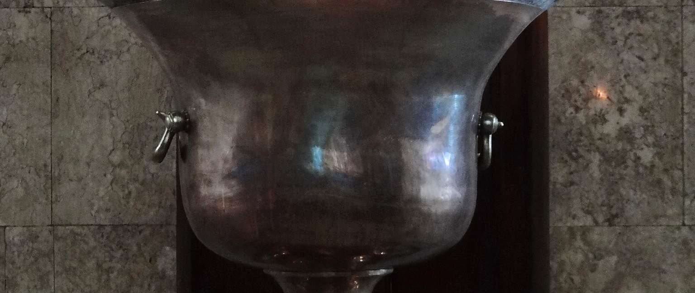
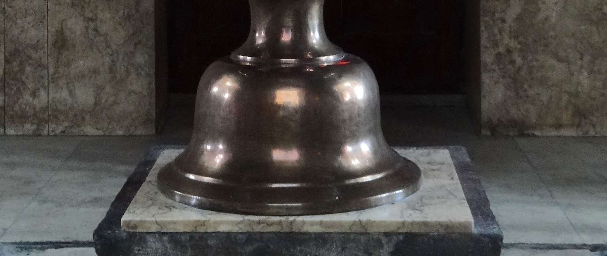
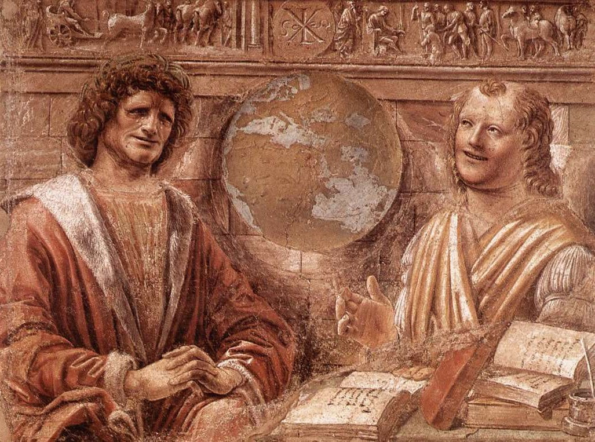
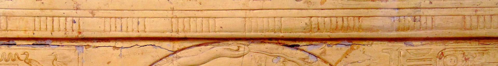
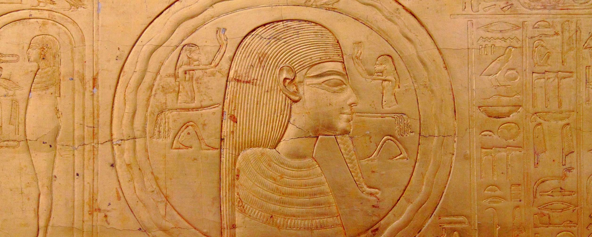
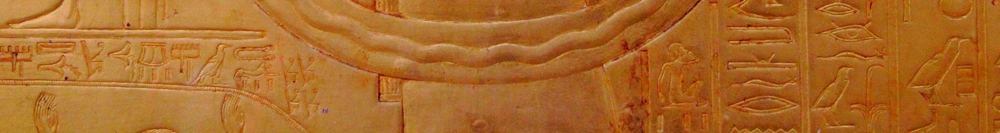
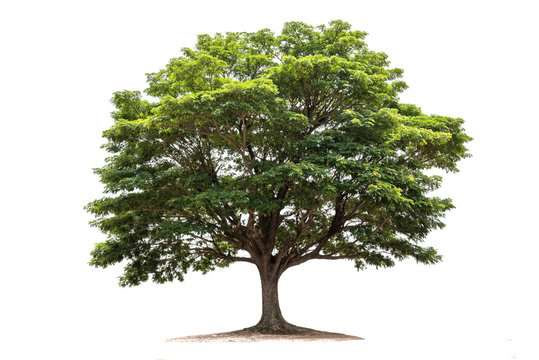
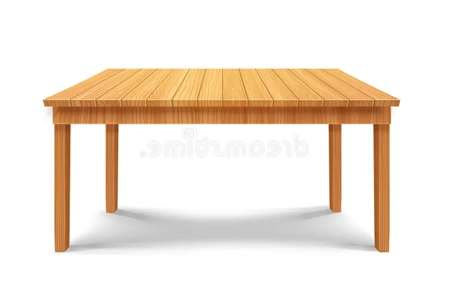
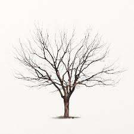

A mudança das coisas. O problema do devir e da mudança, desde Heráclito até a modernidade, passando por Aristóteles e Tomás de Aquino.
Cachoeira do Elefante, vista da estrada Mogi-Bertioga, São Paulo. A água que flui simboliza o problema central desta aula: tudo muda. Como explicar a mudança das coisas?
A solução dos primeiros pensadores pré-socráticos, a de que a matéria nos seus quatro (ou cinco) "elementos" seria suficiente para explicar o Universo, mostrou-se insuficiente. Era preciso uma explicação mais abstrata para dar conta da mudança permanente que observamos no mundo.

Heráclito e Demócrito, Donato Bramante, 1477, Pinacoteca di Brera, Milão. E o fogo eterno em um templo zoroastriano em Yazd, no Irã.
Heráclito de Éfeso (séc. VI a.C.), o "obscuro e melancólico", propõe que a única constante é a mudança, o devir: "ninguém entra duas vezes no mesmo rio".
O Universo não é esta ou aquela substância, mas um processo eterno de mudança governado pela lei do Lógos (Palavra divina). Panta rhei, "tudo flui". E esse movimento permanente é simbolizado pelo fogo.


Foto composta de todas as posições e fases da lua, tiradas do mesmo lugar e na mesma hora ao longo de 28 dias (Giorgia Hofer, 2018). E o Uróboros, do tesouro funerário de Tutancamón, ca. 1323 a.C., Museu Egípcio do Cairo.
O estoicismo adota a ideia de Heráclito, mas considera toda existência como cíclica. O Universo passaria eternamente por ciclos autocriadores e autodestruidores, num processo chamado de epikyrósis ou "conflagração".
Essa afirmação estoica coincide com muitas correntes do hinduísmo, segundo quais o Universo flui de Deus e retorna para Deus. E a religião egípcia afirma o mesmo.
Ninguém entra duas vezes no mesmo rio, pois nem o rio nem a pessoa são os mesmos.
Heráclito de Éfeso

O devir como passagem de potência a ato. A árvore em potência na bolota; a mesa em potência na madeira. Mas a árvore não pode tornar-se um carro — não há essa potência nela.
Aristóteles desenvolve uma explicação do devir que não sofreu desafios sérios ao longo da história. Potência é uma possibilidade, um não-ser parcial que pode vir a ser. Ato é o ser, o ser real, o existir.
Como a potência é um não-ser parcial, não pode atualizar-se sozinha, mas precisa de um "motor" (produtor de movimento, de mudança) que esteja em ato para ser atualizada.

Todo ato deriva de uma potência, que precisou de um ato anterior para ser atualizada. Assim, ou temos uma série infinita, ou um Ato inicial que não deriva de nenhuma potência — o Ato puro, o Primeiro Motor Imóvel.
Uma série infinita não pode ser percorrida, portanto tem de haver esse Primeiro Motor que é Ato Puro — eis uma prova da existência de Deus.


Imagem do Universo, iluminura de um manuscrito de Gautier ou Gossuin de Metz, L'image du monde, ca. 1320-5, BnF, Paris.
Tomás de Aquino adota a explicação de Aristóteles e acrescenta um ciclo semelhante ao dos estoicos e panteístas: a Criação teria um movimento inicial de exitus, de "saída" de Deus, e um reditus, um "retorno" a Deus.
Da Criação do mundo e do ser humano, passando pelo pecado original, Israel, a vinda de Cristo, a Redenção, a Igreja, até os novos céus e nova terra — o Éschaton.
O movimento é o ato do que está em potência enquanto está em potência.
Aristóteles, Física III

Retrato de Nietzsche, de Curt Stoeving, Arquivo Nietzsche, coleção dos Museus da Fundação Clássicos, Weimar, Alemanha.
A rocha de Nietzsche em Surlej junto ao Lago Silvaplaner (Oberengadin, Suíça), onde em agosto de 1881 lhe ocorreu a ideia do eterno retorno do mesmo — concepção fundamental do Zaratustra.
Se todos tivéssemos de repetir eternamente as nossas vidas, com os mesmos pensamentos, mesmas decisões, mesmas ações, mesmos sofrimentos... Como agiríamos?
Nietzsche propõe que se deveria viver a vida como se esse "eterno retorno" fosse real. Mas o problema é que isso demole toda possibilidade de sentido, encarnando o que ele chamava o "horror da existência".

De Hegel e Marx à Escola de Frankfurt: as tentativas modernas de dar sentido ao movimento da história.
Hegel e Marx usam a ideia do devir não como modelo de história cíclico, mas de uma espiral dialética em que os contrários se alternam numa sequência de "teses", "antíteses" e "sínteses", apontando para uma finalidade.
Hegel considerava o auge e o fim da história o Estado prussiano..., ao passo que Marx prognosticava uma sociedade de perfeita igualdade, sem Estado. Já se vê que nenhum dos dois eram bons profetas.
A versão "aguada" do marxismo que chegou a nós através da Escola de Frankfurt perdeu essa ideia de um fim para a história, e afirma que a mera transformação da sociedade pode ser atingida por uma crítica consciente e constante das estruturas opressoras. A questão é: transformação em quê?
A mudança das coisas permanece como um dos grandes enigmas da filosofia — de Heráclito ao Primeiro Motor Imóvel, da espiral dialética ao eterno retorno.